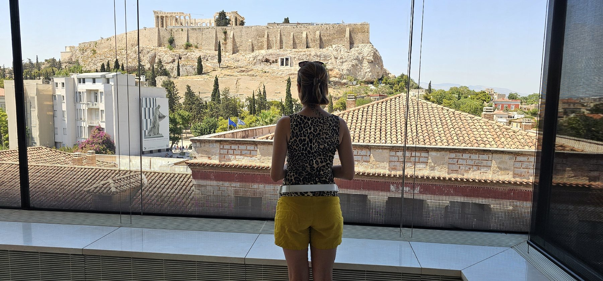
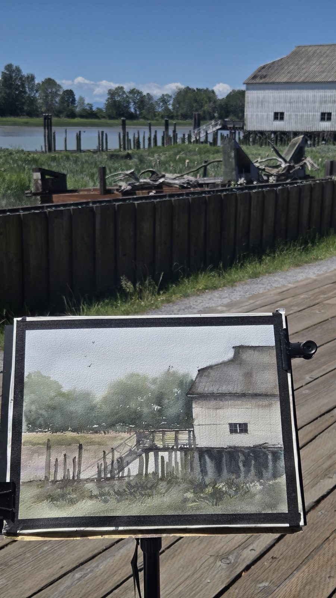

About the artist
Hello, I'm Veronika

I'm a watercolour artist based in Vancouver, painting the everyday and the far-away — heritage canneries along the coast, the working harbour, alpine mornings, and the small, quiet scenes that ask to be remembered.
Most pieces begin outdoors, with a brush, a little water, and whatever the light is doing that day. I love that watercolour can't be fully controlled. It pools and bleeds and surprises you — the way a real moment does. My work is less about getting every detail exact and more about holding onto the feeling of a place.
I tend to return to water: the tide going out under an old building, cranes standing over a still harbour, a swing waiting beneath a tree. There's a stillness in those in-between moments I like to chase.
Whether you're here to look, to take a piece home, or to commission a place that matters to you, I'm so glad you came. Take your time.
On the road
From the BC coast to the places I wander


Painting on location
Made where the moment happens
Whenever I can, I paint outdoors — setting up beside the building, the shoreline, or the view itself. Working from life keeps the colour honest and the feeling true.
Then, back in the studio, each piece is finished by hand on cotton paper, ready to frame.
In the studio
How a painting comes together
On location
I start with the place itself — light, weather, the feel of the air — and quick studies or photographs.
First washes
Loose, wet layers set the mood and the light before any detail. This is where the atmosphere lives.
Building form
Shapes and shadows come forward gradually, keeping the freshness of those first washes.
The quiet details
A few deliberate marks — a piling, a branch, a figure — to carry the story home.
Let's make something
Commission a place you love
Tell me about the spot that means something to you, and I'll paint it in watercolour.